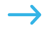

EMPRESAS DE TODO EL MUNDO YA CONFÍAN EN SLACK
Conecta con las personas adecuadas, encuentra lo que necesitas y automatiza todo lo demás. Así es como se trabaja en Slack, tu plataforma de productividad.
EMPRESAS DE TODO EL MUNDO YA CONFÍAN EN SLACK

Los canales son el corazón de Slack. Son espacios organizados para todo el mundo que contienen todo lo necesario para trabajar. Los canales permiten conectarse entre departamentos, oficinas zonas horarias e incluso con otras empresas.
Obtener más información sobre los canales

Slack te otorga la flexibilidad para trabajar cuando, donde y como tú quieras. Puedes chatear, enviar clips de audio y vídeo o unirte a una junta para discutir asuntos en directos.
Obtener más información acerca de la comunicación flexible

Conectar tus otras aplicaciones de trabajo con Slack te permite ahorrar tiempo al no tener que cambiar entre pestañas. Además, con herramientas eficaces como el Creador de flujos de trabajo, puedes automatizar tareas rutinarias.
Más información sobre la plataforma de Slack
Slack se adapta de forma segura para garantizar la colaboración en las empresas más importantes del mundo.
de usuarios afirma que Slack ha mejorado la comunicación*
creen que su capacidad para trabajar a distancia ha mejorado
se sienten más conectados con sus equipos*
"Muchos empleados del sector tecnológico estaban realizando una transición natural hacia Slack. Por lo tanto, seguimos los pasos de nuestros usuarios hacia lo que a día de hoy es una de nuestras herramientas más importantes".
Ver más casos de clientes
*Promedio ponderado. Basado en una encuesta de 2707 respuestas de usuarios semanales de Slack en Estados Unidos, Reino Unido, Australia y Canadá, con un margen de eror de ±2% al 95% CI (diciembre de 2021).